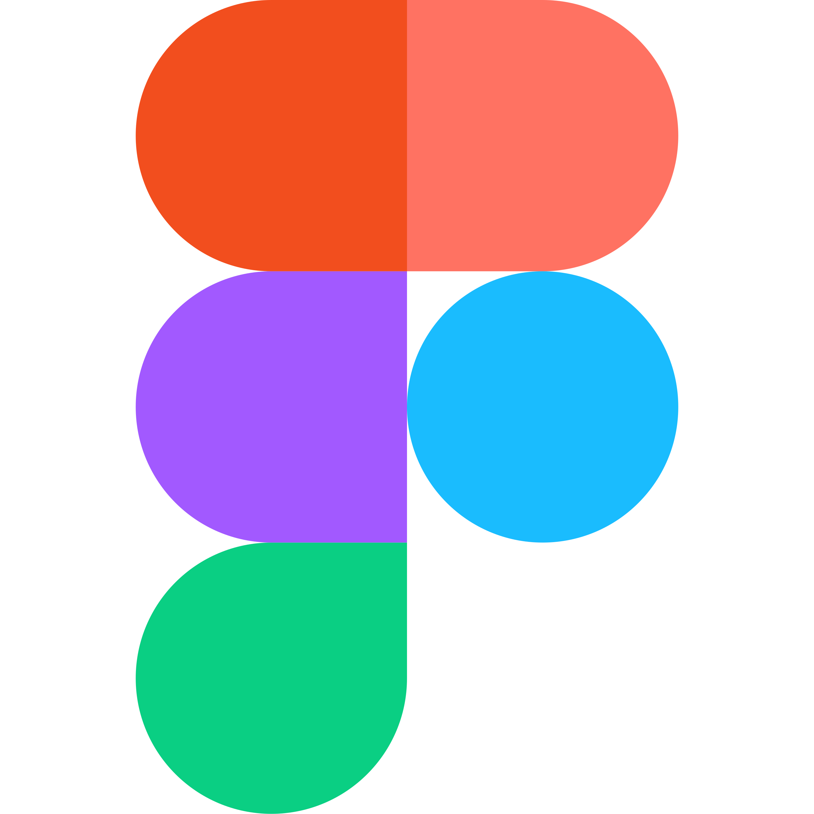
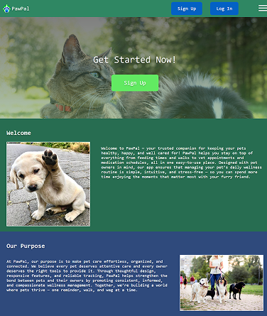

The Tech Stack
Languages:

Tools:


Deployment:

This project is a "Pet Wellness Tracker" web application prototype with the purpose of improving my HTML and CSS skills. Another main focus of this project was to learn how to wireframe and prototype using the "Figma" web application and translate that design prototype into a responsive web application.


HTML: I improved my ability to set up and plan semantic HTML structure in order to easily style it later for the desired result.
CSS: I utilized CSS styling to create a near-perfect replication of my high-fidelity Figma prototype when developing the live site.
AI literacy: I collaborated with GitHub Copilot to be able to code JavaScript functionality into the site, allowing me to incorporate the language before I had an understanding of how to use it.
Prototyping: I used Figma to create a low-fidelity prototype of the website to determine the content layout, then created a high-fidelity prototype that would mirror the true aesthetic of the final website.
I struggled to create my low-fidelity and high-fidelity prototype due to a lack of experience in Figma.
I completed exercises that taught the basics of designing and prototyping using Figma, and I also looked up videos in order to better understand the application’s features.
I didn’t know how to code JavaScript for websites at the time during this project period.
I incorporated GitHub Copilot into my workflow, which allowed me to generate JavaScript code that would allow my website to function through AI prompting.
I wasn’t knowledgeable about incorporating a calendar date picker into my Figma prototype.
I used the resources Figma provides users, Figma’s extensive UI kit libraries, to insert a premade calendar, which I adjusted into a date picker.
Persistence: This was originally supposed to be a two-person project, but I was assigned to do it myself due to certain circumstances. I had to be efficient with how I worked, and I persisted through the workload.
Striving for Accuracy: While creating the live version of the website with the high-fidelity prototype as a reference, I made sure to replicate the prototype as closely as possible rather than settling for something that only vaguely represents it.